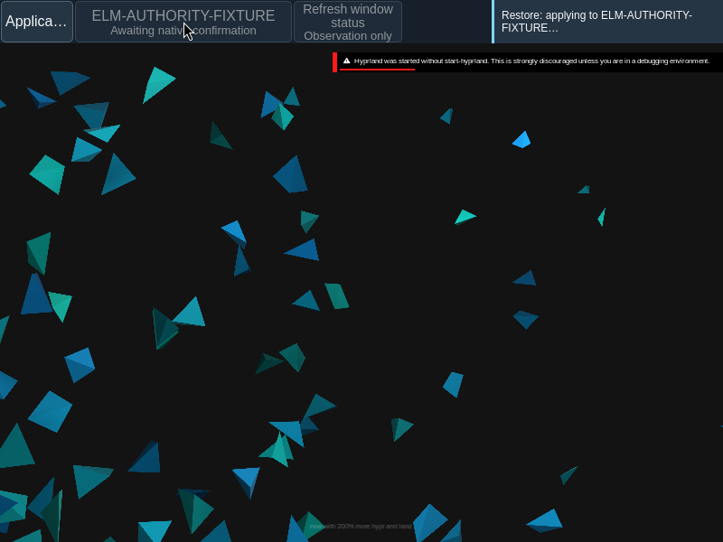
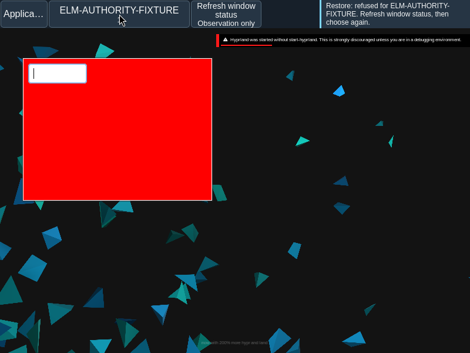
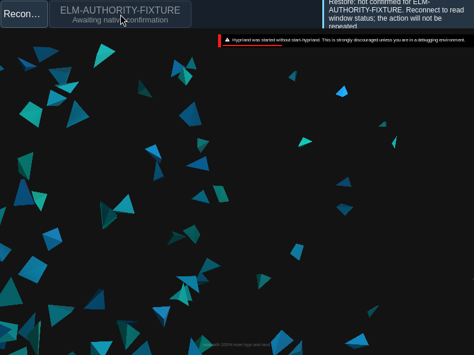
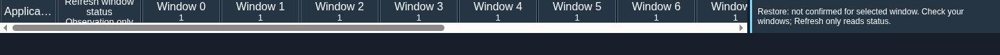

Status and recovery
Understand the result of an action and recover a current view of the desktop.
Current beta & runtime boundary
Component custody checks vs. full-suite & native status: At snapshot 6e6ad828c (2026-11-02 canonical ledger), 19 of 242 whole EARS requirements and 42 of 417 scenarios hold historical source-bound acceptance. Focused 3-suite --custody and focused r19 --backend checks pass on published persistent custody and callback-drain 6e6ad828c (25 owner controls, all 32 seeds 0..31 with zero SIGKILL path, 2 direct exitRace cases, 26 ingress checks, and 40 sessions / 401 complete frames under unchanged 5s/180s deadlines with zero forced cleanup); full r18 remains a retained failed batch at 36/37 suites after ui-backend-controls 180s timeout -9 because changed fixture inputs make r19 a separate focused result rather than a full-suite pass, and application persistent wiring remains incomplete. Captures in Evidence record the frozen bc3daf7b baseline; current isolated Omarchy --application-only exits 1 normally at 27.94s bounded lifetime (selectedOperationSucceeded = false, strict retired-cgroup inventory Unknown), and native GUI/AT/IME/provider/release acceptance remain unaccepted.
Overview
Understand the result of an action and recover a current view of the desktop.
Anatomy
Pending means a request is waiting. Submitted means it was sent, not completed. Refused gives a refusal; Unknown means the result is unconfirmed.
States
Protocols expose their own supported outcomes. Confirmed completion requires the matching authoritative result or observation for that operation. Refresh reads observations and never automatically replays a mutation.
Specimen
Real Elm interface. Simulated desktop. Client window interiors are fixtures. Load the desktop only when you want to explore this component.
Behavior
Refresh status to read current observations; reconnect restores the connection when needed. The native GTK fallback is host reference material, not a browser restart control.
Accessibility
Keep the outcome in text next to the affected control, with focus and status distinguishable without color. The designated announcement surface reports a new outcome once; static examples on this page do not emit live announcements. Refresh and reconnect remain keyboard accessible at enlarged text sizes.
Content
Pending means a matching result is awaited. Submitted means a service accepted a request, not that the operation completed. Refused means the request was declined or became unavailable. Unknown means the result is unconfirmed. Use the completion term supported by the protocol, such as System’s Committed, Files’ Opened or notification action Dispatched, and do not substitute one for another.
Refresh reads current state; reconnect restores a lost connection. Neither automatically replays a mutation. The native GTK fallback is a reference for host recovery, not a browser restart button.
Evidence




Captures show the running interface; they are not simulated fixtures.
View Shell source on GitHub (external reference).